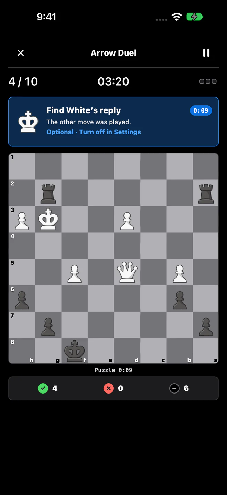
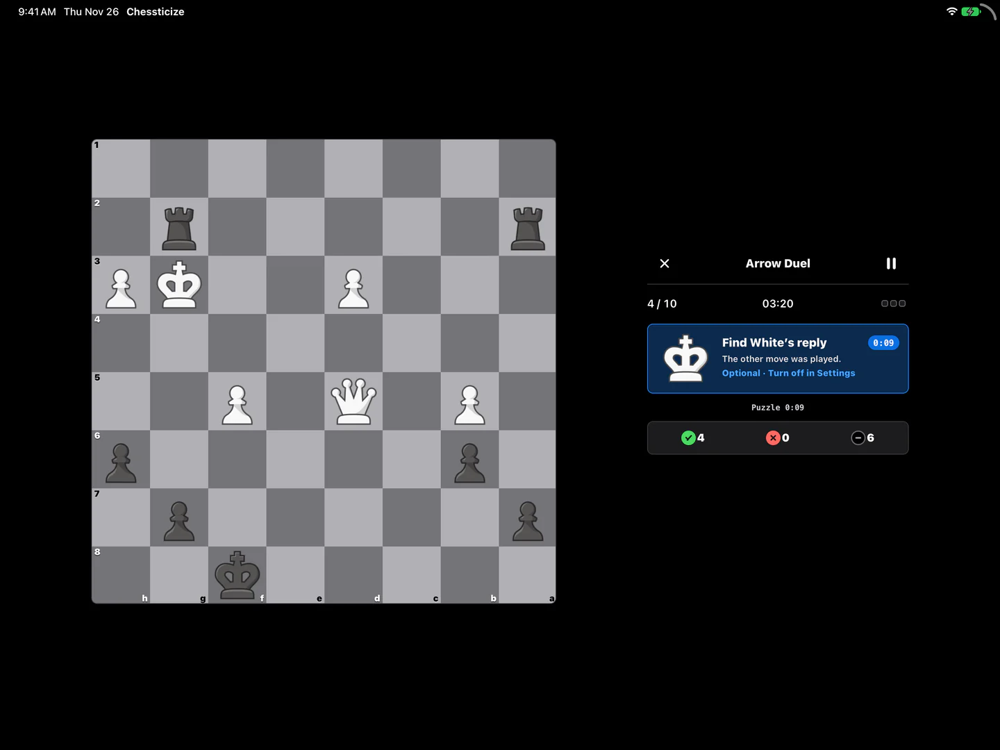

定時複習讓值得再看一遍的題目適時回歸。
答錯與存疑的題目會在到期時再次出現。你也能隨時自由重做局面以檢視路線，而不影響既有的複習排程。

專項訓練始於初步估計，並由你親自掌握。
可從戰術畫像的初步估計預覽專項訓練，或自行決定想練習的戰術主題、節奏與難度。


私密練習，為棋盤保留更大空間。
Chessticize 在行動裝置完全離線運作，無廣告也無需帳號。在 iPhone 與 iPad 上，可選開啟私人 iCloud 同步以在你的 Apple 裝置間合併進度，並可隨時關閉。
